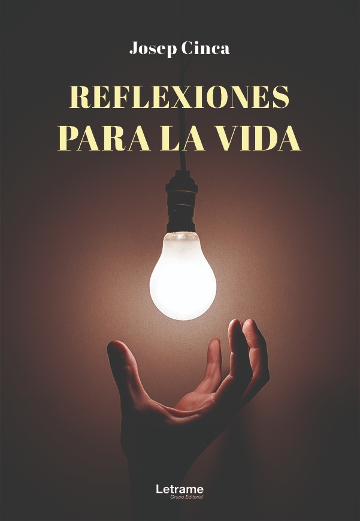
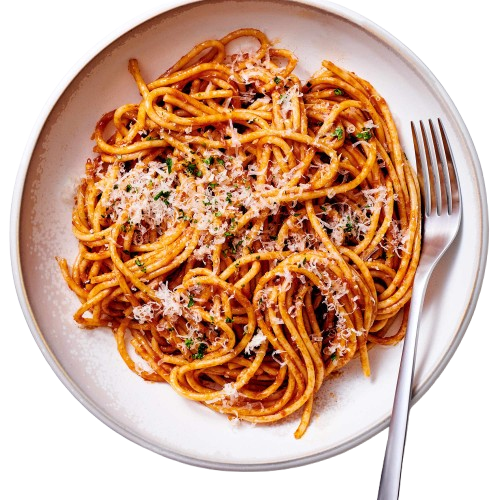
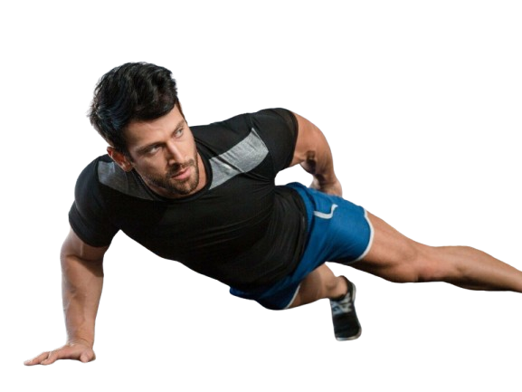

Mis Gustos :
Foto de los que veremos a contunuacion
Mi deporte favorito mi pacion (El Beisboll)
Es considerado uno de los deportes más populares en República Dominicana, Panamá, Corea del Sur, Cuba, Estados Unidos, Curazao, Aruba, Japón, Nicaragua, Puerto Rico, Taiwán, México y Venezuela, y no tan popular, pero con una cantidad importante de aficionados, en países como Canadá, Australia, Sudáfrica, Colombia, China, Países Bajos, Nueva Zelanda e Italia. Los países considerados potencias de este deporte se encuentran en América (Norte y el Caribe) y se juega en un gran campo cubierto completamente por césped natural o artificial, con excepción de una zona llamada línea del corredor, donde los jugadores de la ofensiva corren para alcanzar las bases ubicadas en los vértices del área cuadrangular llamada diamante, y anotar así como el área del lanzador, donde el terreno es una loma de tierra.
Mis Libro favorito...

La sociedad se esta moviendo a un nuevo orden. Para encontrar un lugar en esa sociedad, primero tenemos que encontrar ese lugar en esa sociedad. Reflexiones para la vida recoge las mas hermosas historias de todos los tiempos. ...
Pelicula Favorita :
Desde que el robo de Dom y Brian en Río los dejó a ellos y a su equipo con mucho dinero, ellos se dispersan por todo el mundo; sin embargo, ellos tienen que vivir como fugitivos, incapaces de regresar con sus familias. Mientras tanto, el agente Hobbs ha estado persiguiendo a unos conductores mercenarios cuyo segundo al mando es alguien que Don conoce. Incapaz de detenerlo solo, Hobbs le pide ayuda a Dom y su equipo a cambio del perdón para todos.
A continuacion veremos...
Deporte , comida , pilicula , libro
Comida favorita :
.png)
En la mesa nacional no puede faltar la llamada bandera dominicana, compuesta por arroz blanco, habichuelas guisadas, ensalada verde, pollo guisado dominicano, res o cerdo, y los tostones

La pasta es un alimento de la categoría de los cereales y derivados. Las proporciones de los nutrientes que tiene pueden variar según el tipo y la cantidad del alimento, además de otros factores que puedan intervenir como la preparación.
Ejecicios Fisicos :

Se trata de un término amplio que engloba el concepto de “ejercicio” físico. Ejercicio físico: es un término más específico que implica una actividad física planifica- da, estructurada y repetitiva realizada con una meta, con frecuencia con el objetivo de me- jorar o mantener la condición física de la persona.
Dirección .png)